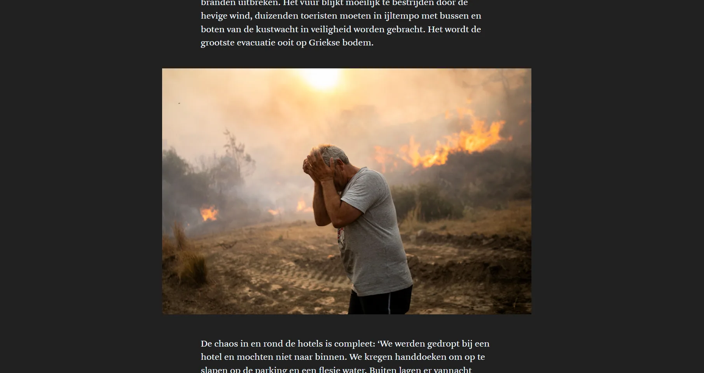
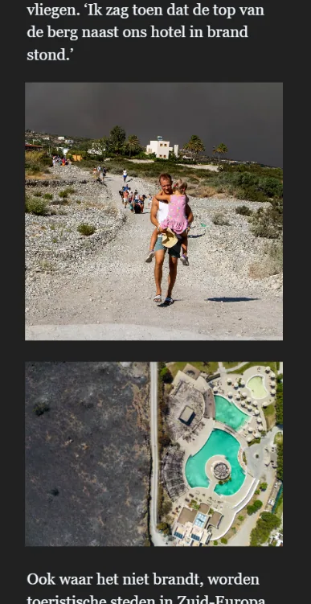
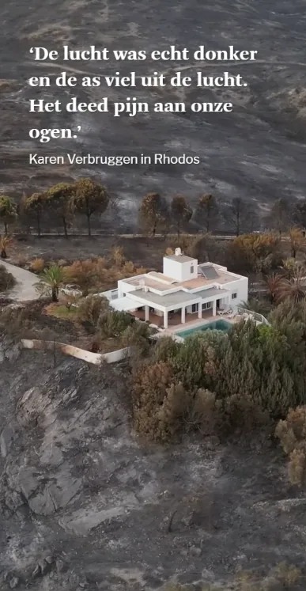
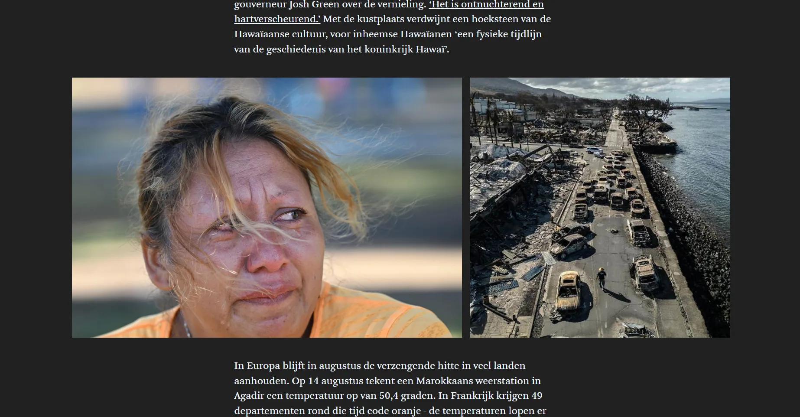
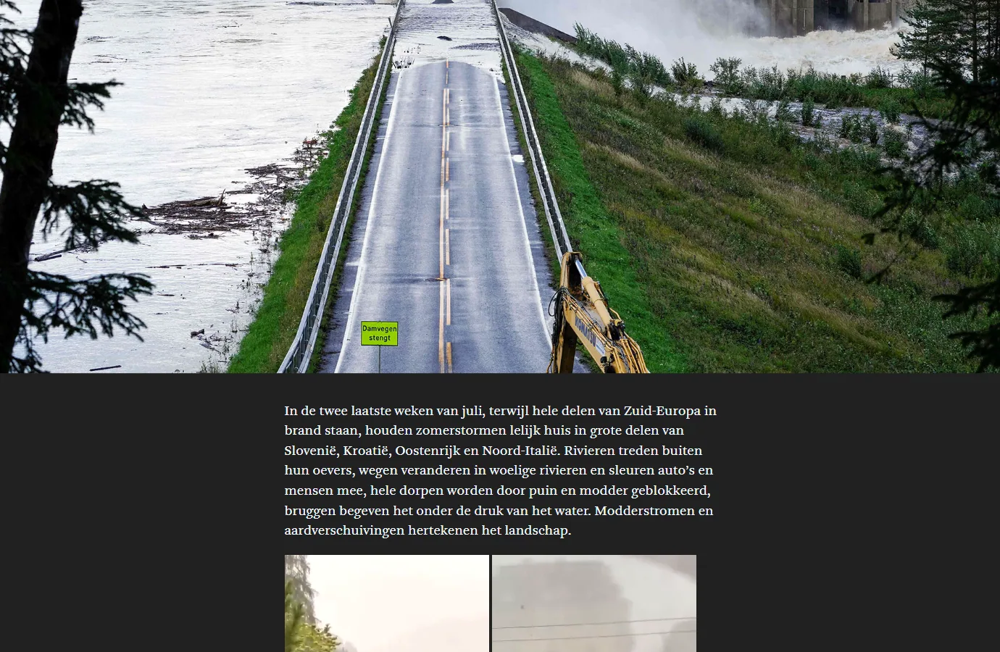

The summer of 2023 was one of extremes: wildfires on Rhodes, Tenerife and Hawaii, scorching heatwaves in southern Europe, summer storms and floods in Slovenia and the Alps, record hail at Lake Garda.

This chronological photo story follows that summer week by week, from the first plumes of smoke over New York to the dam breach in Norway.


Andy and I wrote most of the texts ourselves and handled the entire production. The images – press material from AFP, Belga and Getty Images – were carefully matched to each other, together with the photo and video desks. The dark colour palette gives the dramatic photography all the room it needs.


Made with
Made by
- Tina Boeykens
- Text & production
- Andy Stevens
- Text & production
- Tom Ysebaert
- Production
- Karen Wyckmans
- Photo desk
- Arno Vanhollebeke
- Video desk